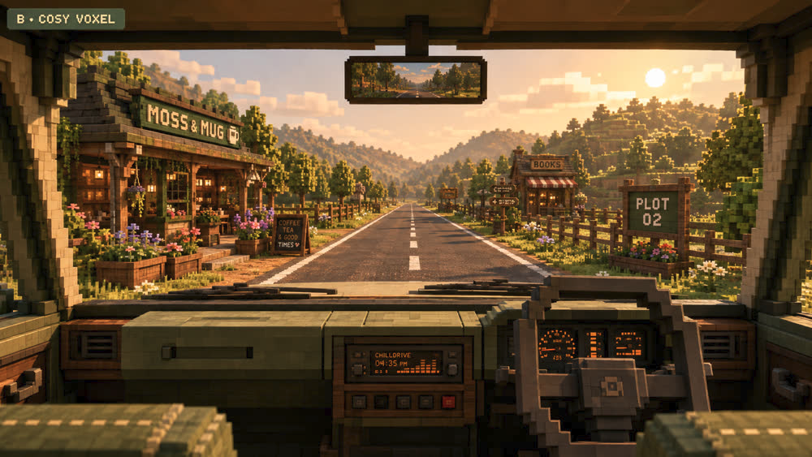
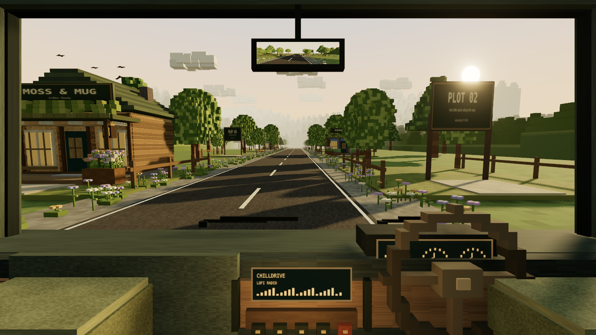

Reference artwork and an actual Three.js render. Same 16:9 framing; the render is not an exact match.

Rich indirect light, fine architectural detail and dense natural scenery.
Revised cockpit, timber details, foliage, contact shading and antialiasing.